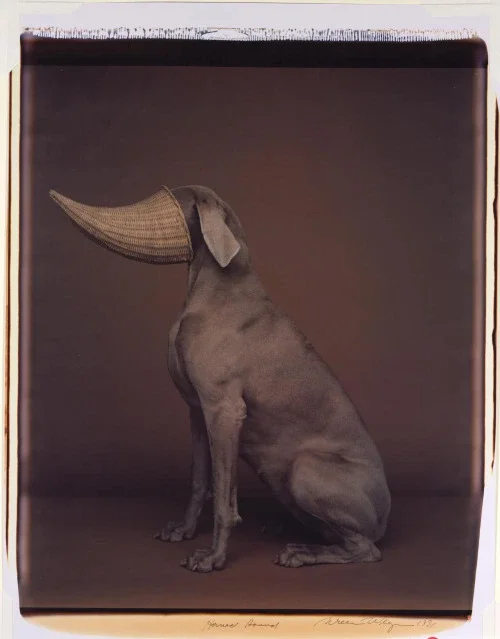
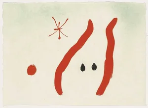

A transferência na análise: um estudo sobre a relação analítica
Explorando os conceitos de transferência e contratransferência na prática psicanalítica, com base na teoria freudiana e lacaniana.
Leia mais →
Atendimento clínico em psicanálise para crianças, adolescentes e adultos.
Formado em Psicologia pela Universidade Federal de Santa Catarina (UFSC), especialista em Teoria e Clínica Psicanalítica pela Universidade Santa Úrsula Rio de Janeiro (USU - RJ). Fez formação em psicanálise pela Maieutica Instituição Psicanalítica.
Formação permanente pela Escolas de Psicanálise dos Fóruns do Campo Lacaniano – Rio de Janeiro (EPFCL-RJ) de 2016 a 2024. Membro da Internacional dos Fóruns do Campo Lacaniano – Brasil de 2019 à 2024. Mestrando em Psicologia Clínica pela UDELAR. Fez parte da Rede de Atenção em Urgencias do Fórum do Campo Lacaniano, ministrou seminários e atuou como supervisor clínico.

Explorando os conceitos de transferência e contratransferência na prática psicanalítica, com base na teoria freudiana e lacaniana.
Leia mais →Reflexões sobre a posição do analista na clínica contemporânea e os desafios éticos do exercício da psicanálise.
Leia mais →Análise do conceito de sintoma na obra de Lacan e suas implicações para a prática clínica contemporânea.
Leia mais →
Investigação sobre a estruturação do inconsciente a partir da linguística e seus efeitos na subjetividade.
Leia mais →